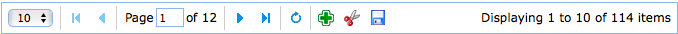

Pagination
Override defaults with $.fn.pagination.defaults.
The pagination allows the user to navigate data by page. It supports configurable options for page navigation and page length choices. The user can add customize buttons on right of pagination to enhance its functionality.
Dependencies
- linkbutton
Usage Example
Create pagination from markup.
Create pagination using javascript.
Let's create ajax pagination with panel and pagination plugins. When the user select a new page, the panel will display the corresponding content of specified page.
The panel on top display the first page content by default. When the user navigate the page, the 'onSelectPage' event will be triggered, in which we call 'refresh' method for the content panel to load new page content with a new URL parameter.
Properties
| Name | Type | Description | Default |
|---|---|---|---|
| total | number | The total records, which should be setted when pagination is created. | 1 |
| pageSize | number | The page size. | 10 |
| pageNumber | number | Show the page number when pagination is created. | 1 |
| pageList | array |
User can change the page size. The pageList property defines how many size can be changed.
Code example:
$('#pp').pagination({
pageList: [10,20,50,100]
});
|
[10,20,30,50] |
| loading | boolean | Defines if data is loading. | false |
| buttons | array,selector |
Defines custom buttons, possible values: 1) an array, each button contains two properties: iconCls: the CSS class which will show a background image handler: a handler function when button is clicked 2) a selector that indicating the buttons. The buttons can be declared from markup:
<div class="easyui-pagination" style="border:1px solid #ccc" data-options="
total: 114,
buttons: [{
iconCls:'icon-add',
handler:function(){alert('add')}
},'-',{
iconCls:'icon-save',
handler:function(){alert('save')}
}]">
</div>
The buttons can also be created using javascript:
$('#pp').pagination({
total: 114,
buttons: [{
iconCls:'icon-add',
handler:function(){alert('add')}
},'-',{
iconCls:'icon-save',
handler:function(){alert('save')}
}]
});
|
null |
| layout | array |
The pagination layout definition. Available since version 1.3.5. The layout item contains one or more following values: 1) list: the page size list. 2) sep: the page button separator. 3) first: the first button. 4) prev: the prev button. 5) next: the next button. 6) last: the last button. 7) refresh: the refresh button. 8) manual: the manual page input to allow entering page number. 9) links: the page number links. 10) info: the page information. Code example:
$('#pp').pagination({
layout:['first','links','last']
});
|
|
| links | number | The links amount, it is valid only when the 'links' item is included in 'layout'. Available since version 1.3.5. | 10 |
| showPageList | boolean | Defines if to show page list. | true |
| showRefresh | boolean | Defines if to show refresh button. | true |
| showPageInfo | boolean | Defines if to show page information. Available since version 1.5.2. | true |
| beforePageText | string | Show a label before the input component. | Page |
| afterPageText | string | Show a label after the input component. | of {pages} |
| displayMsg | string | Display a page information. | Displaying {from} to {to} of {total} items |
Events
| Name | Parameters | Description |
|---|---|---|
| onSelectPage | pageNumber, pageSize | Fires when user select a new page. callback function contains two parameter: pageNumber: the new page number pageSize: the new page size Code example:
$('#pp').pagination({
onSelectPage:function(pageNumber, pageSize){
$(this).pagination('loading');
alert('pageNumber:'+pageNumber+',pageSize:'+pageSize);
$(this).pagination('loaded');
}
});
|
| onBeforeRefresh | pageNumber, pageSize | Fires before the refresh button is clicked, return false to cancel the refresh action. |
| onRefresh | pageNumber, pageSize | Fires after refresh. |
| onChangePageSize | pageSize | Fires when user change the page size. |
Methods
| Name | Parameter | Description |
|---|---|---|
| options | none | Return the options object. |
| loading | none | Make the pagination to become loading status. |
| loaded | none | Make the pagination to become loaded status. |
| refresh | options |
Refresh and display pager information. Available since version 1.3.
Code example:
$('#pp').pagination('refresh'); // refresh the pager bar information
$('#pp').pagination('refresh',{ // change options and refresh pager bar information
total: 114,
pageNumber: 6
});
|
| select | page |
Select a new page. The page index start with 1. Available since version 1.3.
Code example:
$('#pp').pagination('select'); // refresh the current page
$('#pp').pagination('select', 2); // select the second page
|